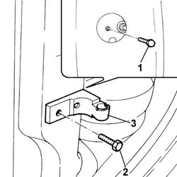
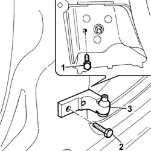
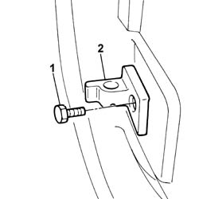

7010A24 rear side door hinges - repair or replace with door removed
- Path
- Procedures > 70 FITTINGS > 7010 PASSENGER COMPARTMENT REAR SIDE DOORS > 7010A rear side door assembly > 7010A24 rear side door hinges - repair or replace with door removed
- Kind
- repair procedure (removal / refitting; the operation number is the code)
- Applies to
- all engines; all production periods
- Interactive page
- https://sloeber94.github.io/elrnDB-fPnd/en/#/2753087
Applies to: all engines; all production periods
 Removing
Removing
 Refitting
RefittingTo remove the top fixed hinge, proceed as described below.
7040L42 sill plate connection of one front door (1), lh or rh - r r
7040L40 front compartment scuff strip - r r
7040H36 central trim lower element - r r
Working from inside the interior compartment, remove the top section of the seat belt and remove the access cap on the inner fixing bolt on the fixed hinge.
1. Undo the inner fixing bolt.
2. Undo the outer fixing bolt.
3. Remove the top fixed hinge.

Applies to: all engines; all production periods
To remove the bottom fixed hinge, proceed as described below.
7040L42 sill plate connection of one front door (1), lh or rh - r r
7040L40 front compartment scuff strip - r r
7040H36 central trim lower element - r r
7065A12 front seat belt (one), lh or rh, with pretensioner on wheel - r r
1. Working in the interior compartment, undo the inner fixing bolt.
2. Undo the outer bolts.
3. Remove the bottom fixed hinge.

Applies to: all engines; all production periods
To remove the moving hinges onthe door and proceed as described below.
1. Undo the retaining bolt.
2. Remove the moving hinge.
Proceed in the same way to remove the remaining hinge.

Applies to: all engines; all production periods
Refitting
RemovingTo refit the moving hinges on the door, proceed as described below.
Fit the moving hinge on the door and loosely tighten the bolt.
Proceed in the same way to fit the remaining hinge.
To refit the bottom fixed hinge, proceed as described below.
Fit the bottom fixed hinge and tighten the fixing bolts to the specified torque.
 | Fastening | Component | Ø | Value (daNm) |
|---|---|---|---|---|
- | Bolt | REAR SIDE DOOR HINGES | M8 | (Internal bodyshell side) 3.2 |
| Fastening | Component | Ø | Value (daNm) |
|---|---|---|---|---|
- | Bolt | REAR SIDE DOOR HINGES | M8 | (External bodyshell side) 3.2 |
If necessary touch-up the paintwork in the hinge area.
7065A12 front seat belt (one), lh or rh, with pretensioner on wheel - r r
7040H36 central trim lower element - r r
7040L40 front compartment scuff strip - r r
7040L42 sill plate connection of one front door (1), lh or rh - r r
Connect the battery terminals.
Check the operation of the Air Bag system using the Examiner or other diagnostic equipment.
To refit the top fixed hinge, proceed as described below.
Fit the top fixed hinge and tighten the fixing bolts to the specified torque.
| Fastening | Component | Ø | Value (daNm) |
|---|---|---|---|---|
- | Bolt | REAR SIDE DOOR HINGES | M8 | (Internal bodyshell side) 3.2 |
| Fastening | Component | Ø | Value (daNm) |
|---|---|---|---|---|
- | Bolt | REAR SIDE DOOR HINGES | M8 | (External bodyshell side) 3.2 |
Working from in the interior compartment, fit the access cap to the inner fixing bolt and put the upper section of the seat belt back in position.
If necessary, touch up the paintwork in the hinge area.
7040H36 central trim lower element - r r
7040L40 front compartment scuff strip - r r
7040L42 sill plate connection of one front door (1), lh or rh - r r
Topics linked from this page (5)
- 7010A14 rear side door - adjust centering and moulding - includes adaptation of hinges and seals on door compartment
- 7040H36 central trim lower element - r r
- 7040L40 front compartment scuff strip - r r
- 7040L42 sill plate connection of one front door (1), lh or rh - r r
- 7065A12 front seat belt (one), lh or rh, with pretensioner on wheel - r r